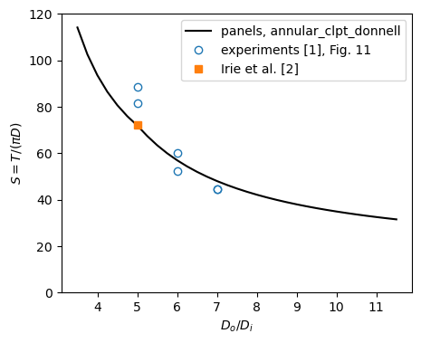
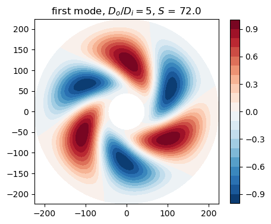

In-plane torsional buckling of clamped annular plates (Hamada and Harima 1986)#
Hamada and Harima [1] computed, with finite differences, the torque at which an annular plate loaded by in-plane shear on its edges buckles, for all combinations of clamped, simply supported and free edges, and tested steel plates clamped on both edges. This notebook computes the buckling torque of their specimens with the annular-sector model annular_clpt_donnell of panels and compares it with their experiments (their Fig. 11) and with the Ritz solution of Irie, Yamada and Tsujino [2],
reprinted by Bagheri, Kiani and Eslami [3].
The same problem, a torque transmitted through the web of a ring frame, appears in the frames of stiffened cylinders under torsion.
[1]:
import time
import numpy as np
import matplotlib.pyplot as plt
import panels
from panels.shell import Shell
from panels.multidomain import MultiDomain
%matplotlib inline
print('panels', panels.__version__)
T_START = time.time()
def print_table(rows, headers):
cols = list(zip(*([headers] + [[str(c) for c in r] for r in rows])))
widths = [max(len(c) for c in col) for col in cols]
fmt = ' '.join('%%%ds' % w for w in widths)
print(fmt % tuple(headers))
print(' '.join('-'*w for w in widths))
for r in rows:
print(fmt % tuple(str(c) for c in r))
def rel(value, ref):
# relative difference in per cent
return 100.*(value - ref)/ref
panels 0.15.0
1. Specimens and dimensionless torque#
From [1], Sec. 4.2: annular plates cut from a steel plate SS41 of thickness \(h = 0.5\) mm; the outer part clamped in a stiff frame, the outer diameter of the specimen being 448 mm; the central part clamped by stiff round bosses of three diameters, so that the ratios of the outer to the inner diameter are \(D_o/D_i = 5, 6, 7\), two specimens per ratio. The outer frame was fixed and the central boss rotated by a torsion testing machine.
The buckling torque is given in the dimensionless form of [1], Eq. (9),
\(D\) being the flexural rigidity. Irie et al. [2] use \(\tau_B = T_B/(2 \pi D) = S/2\), with \(\beta\) the ratio of the inner to the outer radius, \(\beta = D_i/D_o\).
[1] gives neither Young’s modulus nor Poisson’s ratio of the steel. \(S\) does not depend on \(E\): the pre-buckling membrane forces and the geometric stiffness are proportional to \(T\), the bending stiffness to \(D\). For a plate clamped on both edges it does not depend on \(\nu\) either, the bending energy of a clamped plate being \(\frac{D}{2} \int (\nabla^2 w)^2 \, dA\); Section 4 checks it. The values below are therefore only a convenient choice.
[2]:
H = 0.5 # mm, [1] Sec. 4.2
R_OUT = 448./2 # mm, outer diameter 448 mm, [1] Sec. 4.2
RATIOS = (5, 6, 7) # D_o/D_i of the specimens, [1] Sec. 4.2
E = 206e3 # N/mm^2, not given in [1]: S does not depend on it
NU = 0.3 # not given in [1]: S does not depend on it (Section 4)
def flexural_rigidity(nu=NU):
return E*H**3/(12*(1 - nu**2))
2. Pre-buckling state and model#
A torque \(T\) applied to one edge of the annulus and reacted on the other gives, by the equilibrium of moments about the centre of the part of the plate inside the radius \(\rho\), the membrane state
whatever the in-plane edge conditions ([3], Eqs. (10) and (12)); the shear is largest at the inner edge. The buckling torque therefore does not depend on which edge the torque is applied to. In the model the inner edge is fixed in its plane and the outer edge carries the tangential force per unit length \(q = T/(2 \pi r^2)\), \(r\) being the outer radius, along which the coordinate \(y\) of the annular sector is the arc length.
The full annulus is made of two half annuli of annular_clpt_donnell, the classical plate theory in polar coordinates, whose radial edges are free and connected with 'SSycte'; both circular edges are clamped, \(w = w_{,\rho} = 0\). In the coordinates of the sector, \(x = r - \rho\) runs from the outer edge inwards and \(N_{xy} = -N_{\rho\theta}\). Each displacement field is a Ritz series of Bardell’s hierarchical functions, \(m\) terms along the radius and \(n\) along
each half circumference [4].
The linear static solution \(\boldsymbol{c}\) for the load \(T\) gives the geometric stiffness \(\boldsymbol{K}_G(\boldsymbol{c})\), and the buckling torque is \(\lambda T\) with the least \(|\lambda|\) of \((\boldsymbol{K}_C + \lambda \boldsymbol{K}_G) \boldsymbol{\phi} = \boldsymbol{0}\) (MultiDomain.linear_buckling). The critical values come in pairs of opposite sign, an isotropic plate buckling under a torque of either sense.
[3]:
def annulus(beta, T, m, n, nu=NU, inner='C', outer='C'):
flags = {'C': (0, 0), 'SS': (0, 1), 'F': (1, 1)}
halves = []
for _ in range(2):
s = Shell(model='annular_clpt_donnell', a=R_OUT*(1 - beta), b=np.pi*R_OUT,
r=R_OUT, m=m, n=n, plyt=H, stack=[0], laminaprop=(E, nu))
for e in ('y1', 'y2'):
for f in ('u', 'v', 'w', 'ur', 'vr', 'wr'):
setattr(s, e + f, 1)
s.x1u = s.x1v = 1 # outer edge free in its plane, loaded
s.x2u = s.x2v = 0 # inner edge fixed in its plane
s.x1w, s.x1wr = flags[outer]
s.x2w, s.x2wr = flags[inner]
s.add_distr_load_fixed_x(0., funcy=lambda y: T/(2*np.pi*R_OUT**2) + 0*y)
halves.append(s)
p1, p2 = halves
conn = [dict(p1=p1, p2=p2, func='SSycte', ycte1=p1.b, ycte2=0),
dict(p1=p1, p2=p2, func='SSycte', ycte1=0, ycte2=p2.b)]
return MultiDomain([p1, p2], conn)
def buckling(beta, m, n, nu=NU, **kwargs):
# S = T/(pi D) of the least |lambda| for T = pi D, and the first mode
T = np.pi*flexural_rigidity(nu)
md = annulus(beta, T, m, n, nu=nu, **kwargs)
eigvals, eigvecs = md.linear_buckling(num_eigvalues=6, silent=True)
i = np.argmin(np.abs(eigvals))
return abs(eigvals[i]), md, eigvecs[:, i]
The membrane state of the linear static case against \(N_{xy} = -T/(2 \pi \rho^2)\), for \(D_o/D_i = 5\), along a radius of the first half annulus:
[4]:
T = 1.e3 # N mm
md = annulus(1/5, T, m=12, n=16)
c = md.linear_static()
s = md.panels[0]
xs = np.linspace(0, s.a, 7)[:, None]*np.ones((1, 1))
ys = np.full_like(xs, s.b/3)
Nxy = s.stress(c[s.col_start:s.col_end], xs=xs, ys=ys, NLgeom=False)[1]['Nxy']
rows = []
for x, N in zip(xs.ravel(), Nxy.ravel()):
ref = -T/(2*np.pi*(R_OUT - x)**2)
rows.append(['%.1f' % (R_OUT - x), '%.5f' % N, '%.5f' % ref, '%+.3f' % rel(N, ref)])
print_table(rows, ['rho (mm)', 'Nxy panels (N/mm)', '-T/(2 pi rho^2)', 'diff (%)'])
rho (mm) Nxy panels (N/mm) -T/(2 pi rho^2) diff (%)
-------- ----------------- --------------- --------
224.0 -0.00318 -0.00317 +0.181
194.1 -0.00422 -0.00422 -0.036
164.3 -0.00590 -0.00590 +0.024
134.4 -0.00881 -0.00881 -0.002
104.5 -0.01456 -0.01457 -0.013
74.7 -0.02855 -0.02855 +0.016
44.8 -0.07927 -0.07930 -0.039
3. Convergence#
The number of terms along the radius, \(m\), and along each half circumference, \(n\), is increased for the three ratios. The buckling modes are spirals with a few waves around the circumference ([1], Fig. 8; [2], Table 1).
[5]:
MESHES = [(8, 12), (10, 14), (12, 16), (14, 18), (16, 20)]
S = {}
for ratio in RATIOS:
rows = []
prev = None
for m, n in MESHES:
S[(ratio, m, n)] = buckling(1/ratio, m, n)[0]
change = '' if prev is None else '%+.4f' % rel(S[(ratio, m, n)], prev)
rows.append([m, n, '%.3f' % S[(ratio, m, n)], change])
prev = S[(ratio, m, n)]
print('D_o/D_i = %d' % ratio)
print_table(rows, ['m', 'n', 'S', 'change (%)'])
print()
M_FIN, N_FIN = MESHES[-1]
D_o/D_i = 5
m n S change (%)
-- -- ------ ----------
8 12 73.231
10 14 71.983 -1.7036
12 16 71.971 -0.0167
14 18 71.969 -0.0030
16 20 71.968 -0.0008
D_o/D_i = 6
m n S change (%)
-- -- ------ ----------
8 12 58.486
10 14 57.017 -2.5127
12 16 56.988 -0.0497
14 18 56.988 -0.0013
16 20 56.987 -0.0010
D_o/D_i = 7
m n S change (%)
-- -- ------ ----------
8 12 49.866
10 14 48.105 -3.5318
12 16 48.035 -0.1442
14 18 48.035 -0.0013
16 20 48.034 -0.0013
4. Independence of Poisson’s ratio#
For both edges clamped the critical torque in terms of \(D\) should not depend on \(\nu\):
[6]:
rows = []
for ratio in RATIOS:
S_nu = buckling(1/ratio, M_FIN, N_FIN, nu=0.25)[0]
rows.append([ratio, '%.3f' % S[(ratio, M_FIN, N_FIN)], '%.3f' % S_nu,
'%+.4f' % rel(S_nu, S[(ratio, M_FIN, N_FIN)])])
print_table(rows, ['D_o/D_i', 'S, nu = 0.3', 'S, nu = 0.25', 'diff (%)'])
D_o/D_i S, nu = 0.3 S, nu = 0.25 diff (%)
------- ----------- ------------ --------
5 71.968 71.968 -0.0000
6 56.987 56.987 -0.0000
7 48.034 48.034 +0.0000
5. Comparison with the Ritz solution of Irie et al.#
\(D_o/D_i = 5\) is \(\beta = 0.2\) of the table of Irie, Yamada and Tsujino [2] (Table 1, C-C, \(\tau_B = 36.02\), three waves), reprinted by Bagheri, Kiani and Eslami [3] (Table 1) beside their own differential-quadrature value 35.982. The other two ratios are not in [2]; the table also compares the clamped annuli of [2] for \(\beta = 0.1\) to \(0.5\).
[7]:
IRIE_CC = {0.1: 17.55, 0.2: 36.02, 0.3: 61.97, 0.4: 106.3, 0.5: 186.1} # [2] Table 1
BAGHERI_CC = {0.1: 17.454, 0.2: 35.982, 0.3: 61.955, 0.4: 106.271, 0.5: 186.051} # [3] Table 1
rows = []
for beta, ref in IRIE_CC.items():
tau = buckling(beta, M_FIN, N_FIN)[0]/2
rows.append(['%.1f' % beta, '%.3f' % tau, ref, '%+.2f' % rel(tau, ref),
BAGHERI_CC[beta], '%+.2f' % rel(tau, BAGHERI_CC[beta])])
print_table(rows, ['beta', 'tau_B panels', 'Irie [2]', 'diff (%)', 'Bagheri [3]', 'diff (%)'])
beta tau_B panels Irie [2] diff (%) Bagheri [3] diff (%)
---- ------------ -------- -------- ----------- --------
0.1 17.456 17.55 -0.53 17.454 +0.01
0.2 35.984 36.02 -0.10 35.982 +0.01
0.3 61.959 61.97 -0.02 61.955 +0.01
0.4 106.279 106.3 -0.02 106.271 +0.01
0.5 186.070 186.1 -0.02 186.051 +0.01
6. Comparison with the experiments#
[1] reports the experimental buckling torques only as points of its Fig. 11, \(S\) against \(D_o/D_i\); each was taken as the asymptote \(A\) of \(T = A (1 - e^{-B \eta + C})\) fitted to the measured torque against the angle of torsion \(\eta\) ([1], Eq. (31)). The values below were read from the figure (the centres of the circles of a 600 dpi image of the PDF, the axes calibrated on the ticks); the reading is accurate to about \(\pm 1\) in \(S\). The two specimens with \(D_o/D_i = 7\) gave the same value and are drawn as one circle.
[8]:
# [1] Fig. 11, read from the figure
S_EXP = {5: (88.5, 81.5), 6: (60.2, 52.4), 7: (44.4, 44.4)}
rows = []
for ratio in RATIOS:
S_th = S[(ratio, M_FIN, N_FIN)]
for i, S_e in enumerate(S_EXP[ratio]):
rows.append([ratio, i + 1, '%.1f' % S_e, '%.2f' % S_th, '%+.1f' % rel(S_th, S_e)])
print_table(rows, ['D_o/D_i', 'specimen', 'S experiment [1]', 'S panels', 'diff (%)'])
ratios = np.linspace(3.5, 11.5, 33)
S_curve = [buckling(1/x, M_FIN, N_FIN)[0] for x in ratios]
fig, ax = plt.subplots(figsize=(5, 4))
ax.plot(ratios, S_curve, 'k-', label='panels, annular_clpt_donnell')
for ratio in RATIOS:
ax.plot([ratio]*2, S_EXP[ratio], 'o', mfc='none', color='C0',
label='experiments [1], Fig. 11' if ratio == 5 else None)
ax.plot([5], [2*IRIE_CC[0.2]], 's', color='C1', label='Irie et al. [2]')
ax.set_xlabel('$D_o/D_i$')
ax.set_ylabel('$S = T/(\\pi D)$')
ax.set_ylim(0, 120)
ax.legend()
plt.show()
D_o/D_i specimen S experiment [1] S panels diff (%)
------- -------- ---------------- -------- --------
5 1 88.5 71.97 -18.7
5 2 81.5 71.97 -11.7
6 1 60.2 56.99 -5.3
6 2 52.4 56.99 +8.8
7 1 44.4 48.03 +8.2
7 2 44.4 48.03 +8.2

7. Buckling mode#
The deflection \(w\) of the first mode of the plate with \(D_o/D_i = 5\), normalized:
[9]:
S5, md5, mode = buckling(1/5, M_FIN, N_FIN)
fig, ax = plt.subplots(figsize=(5, 5))
wmax = 0
fields = []
for k, p in enumerate(md5.panels):
xs, ys = np.meshgrid(np.linspace(0, p.a, 40), np.linspace(0, p.b, 160), indexing='ij')
w = p.uvw(mode[p.col_start:p.col_end], xs=xs, ys=ys)[1]['w']
rho = R_OUT - xs
theta = ys/R_OUT + k*np.pi
fields.append((rho*np.cos(theta), rho*np.sin(theta), w))
wmax = max(wmax, np.abs(w).max())
for X, Y, w in fields:
cs = ax.contourf(X, Y, w/wmax, levels=np.linspace(-1, 1, 21), cmap='RdBu_r')
ax.set_aspect('equal')
ax.set_title('first mode, $D_o/D_i = 5$, $S$ = %.1f' % S5)
fig.colorbar(cs, ax=ax, shrink=0.8)
plt.show()

8. Discussion#
Pre-buckling state. The linear static case reproduces \(N_{xy} = -T/(2 \pi \rho^2)\) within 0.04 % inside the plate (0.18 % on the loaded edge).
Convergence. From \(m = 12\), \(n = 16\) on, \(S\) changes by less than 0.003 %; the finest mesh, \(m = 16\), \(n = 20\), is used for the comparisons. As expected for both edges clamped, \(S\) is the same for \(\nu = 0.3\) and \(0.25\) to all printed digits.
Ritz solutions. panels agrees with the differential-quadrature values of Bagheri et al. [3] within 0.01 % for \(\beta = 0.1\) to \(0.5\), and with Irie et al. [2] within 0.10 % for \(\beta \ge 0.2\) (0.53 % for \(\beta = 0.1\), where [3] differs from [2] by the same amount). For \(D_o/D_i = 5\), \(S = 71.97\) is twice \(\tau_B = 35.98\) of [2] and [3]; the first mode is a spiral with three waves around the circumference (Section 7), as \(n_B = 3\) of [2].
Experiments. The experimental torques of [1] scatter by about 10 % between the two specimens of the same ratio. panels lies 12 % and 19 % below both specimens of \(D_o/D_i = 5\), between the two specimens of \(D_o/D_i = 6\) (-5 % and +9 %) and 8 % above the specimens of \(D_o/D_i = 7\); the curve of [1], Fig. 11, computed with finite differences, passes through the same region. The experimental values come from an extrapolation of the torque-rotation curves (Eq. (31) of [1]), and [1] attributes the gradual bending of the measured curves to initial imperfections of the specimens; the clamping by stiff bosses and frames is also not perfect. Within this scatter the linear buckling torque of the clamped annulus describes the tests.
References#
Hamada, M., and Harima, T., “In-plane torsional buckling of an annular plate”, Bulletin of JSME, Vol. 29, No. 250, 1986, pp. 1089-1095, Eq. (9), Sec. 4.2, Figs. 8 and 11. https://doi.org/10.1299/jsme1958.29.1089
Irie, T., Yamada, G., and Tsujino, M., “Buckling loads of annular plates subjected to a torque”, Journal of Sound and Vibration, Vol. 86, No. 1, 1983, pp. 145-146, Table 1. https://doi.org/10.1016/0022-460X(83)90951-3
Bagheri, H., Kiani, Y., and Eslami, M. R., “Buckling of moderately thick annular plates subjected to torque”, Archive of Mechanical Engineering, Vol. 66, No. 2, 2019, pp. 209-227, Eqs. (10),
and Table 1. https://doi.org/10.24425/ame.2019.128445
Castro, S. G. P., and Donadon, M. V., “Assembly of semi-analytical models to address linear buckling and vibration of stiffened composite panels with debonding defect”, Composite Structures, Vol. 160, 2017, pp. 232-247. https://doi.org/10.1016/j.compstruct.2016.10.026
[10]:
print('total run time: %.1f min' % ((time.time() - T_START)/60))
total run time: 14.5 min